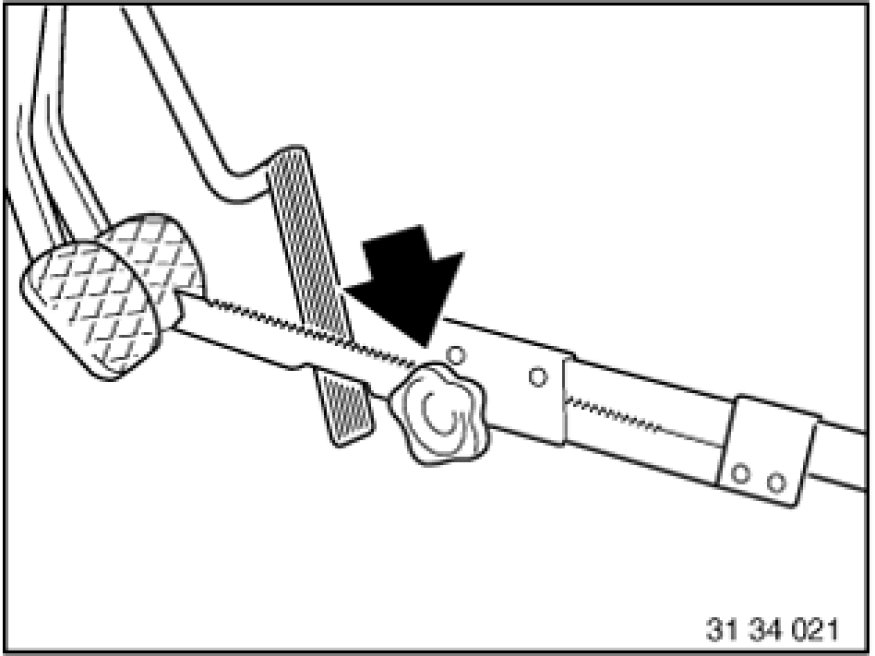
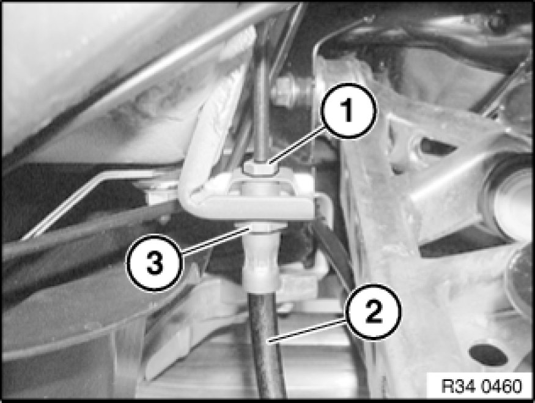
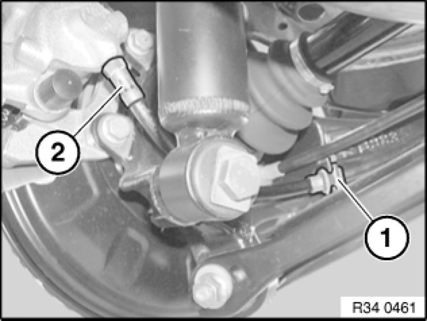

Replacing Rear Left or Right Brake Hose
34 32 980 - Replacing rear left or right brake hose

Necessary preliminary tasks:
- Read and comply with General Information Service and Repair.
After completing work: Bleed braking system Bleeding Brake System with DSC

Press clutch pedal down to floor and secure with pedal support.
Note:
The pedal support may only be released when the brake lines are reconnected.
This prevents brake fluid from emerging from the expansion tank and air from entering the system when the brake lines are opened.

Important!
Grip brake hose at square head (3) to prevent connecting piece from turning in retaining bracket.
Disconnect brake hose (2) from brake line (1).
Installation:
Tightening torque 34 32 1AZ 34 32 Brake Lines.

Detach retaining plate (1) from metal bracket and feed out brake hose (2).
Disconnect brake hose (2) from brake caliper.
Installation:
Tightening torque 34 32 2AZ 34 32 Brake Lines.
Installation:
First tighten brake hose on brake caliper.
Important!
Never twist brake hose when installing it and avoid all contact with parts attached rigidly to the body.
Insert brake hose in bracket and screw onto brake pipe.
Fit retaining plate (1).